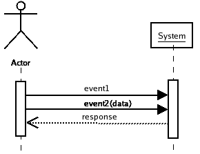

- SSD::="System Sequence Diagram", a way of using the UML to model the sequences of events flowing between actors and the system under development.
SSD's clarify the steps in use cases and prepares you to design
collections of objects that realize a use case.
Each SSD should show a scenario with one event/response for each interaction
between an actor and the system. These events should be thought of
as coming from the user interface into the heart of the software.
We will work out what happens inside this next week.
We will use sequence diagrams with similar form but more objects
to design our software.
The messages in the SSD will be the incoming "found" messages that we
will use to work out how objects in our program will "collaborate" to
give the response that the user/stakeholders require.
It shows a single box(object) for the whole system. It does not show
any internals of the system. It is a black box model of the system.

[ Larman%20Chapter%209.ppt ]
(429 kB).
I remove points if your SSD does not show the [:System] object and the actors.
I remove points if you draw an SSD and show objects that are inside the system.
A common error is to do design before you clarify the
steps in an SSD. This shows up by not having a single box called [:System]
plus the actors from the use case. The result -- I've seen dozens of these --
especially on the web -- are designs that can not work.
The purpose is to define the detailed flow of messages and data between the actors and the
system as a whole.
Once this is done it is much easier to design objects to realise each step. Do this
later!
Messages turn up a lot in OO programs: in SSD, interaction diagrams, and in design class diagrams.
You should use a strict syntax for messages in UML diagrams.
login(id,password)
logout()
findClassesWith(name)
registerIn(me, class)
pick(itemNumber)
createMailMessage(subject, replyTo, message, signature)
You aim to be a precise as possible. The idea is to uncover the details that can kill
a project, not to slide them underneath a rug.
Here is the syntax of function calls:
- message::= name "(" data ")".
The parentheses are important. Do not omit them.
login(userId, password)
- message_with_response::= identifier ":=" message,
Useful when something valuable is returned by when a message is sent.
reply:=sendEmail(to,subject,body)
music:=playSelectionFromList(selection)
You can also use a "return" arrows that are dashed and have an open arrowhead.
Note -- omit responses that merely say that the message has been handled!
KISS!
Response are just objects. They are data.
The data (objects) are sent back in response
to a message:
confirmRegistration
listOfCourse
OK
MessageOfTheDay
acknowledgement, rendered_page
These are put on dashed arrows with an open "stick" arrowhead.
Note -- in an SSD you can return several objects inside a
single response. When designing the internals of a program
you need to be aware that programming languages may require you to pack
all the response to a message into a single object.
But keep this out of domain models and SSDs! All practical
languages support vectors, lists, sets, etc. in some form or other.
You can add multiplicities like "[*]" and properties like "{set}" to data
descriptions.
- data::= empty | datum | datum "," datum "," .... | ...
The data is empty, or an identifier, or a list of identifiers.
You can also specify the class of the data like this
- datum::= identifier O(":" className #("[" multiplicity "]" | "{" property "}")),
add the type after a colon and then any number of multiplicities and properties as needed.
messageOfTheDay : Text
cost : Money
listOfCourses : Course[*]{list}
- name::= event | request_for_action_by_target.
You should choose short names that either tell the reader the reason that
the message was sent or it is an instruction to the target object
to do something.
timeOut
create
playSelectionFromList
- empty::="", indicates that the message has no data -- typically one of a small number
of events like clicking the logout button.
- identifier::=lowerCaseWord # UppercaseWord, the data in a message either is an element like a number,
character, or string. It can also identify an object. You send an object in a message so that
the receiving object can do things to it ... like send back a response or extract more data.
Put messages on an arrow with a filled in head. Put returned objects on
lines that are dashed with an open arrowhead.
Whne the user supplies data -- you must name it and show it in messages. When the
system responds with data you must name it. The names must be clear.
For example, a diagram that shows a login message but does not show the data used
to identify and authenticate the user is wrong. It can not work.
Even if your diagram shows a messahe "login()" sent to an object "[:User]" it
can not work -- (1) which user? (2) How did you find it, (3) what! no password!
Again a common step is when the user elects an item in a list. Do not
show this as a message "select()" going to an object "[:Item]", instead
selectItemInList(selection)
is sent to the [:System] in the SSD and it will (probably) route it to [:List]...
- * Purpose: Given some use cases, refine some of their scenarios.
- * Prepare to design objects to handle use cases.
- * Fig 10.1 Artifact influences
- * 10.1 Example: NextGen SSD
- ** 10.2 Definition of SSD
- *** 10.3 Motivation: why draw a SSD
- *** 10.4 Using the UML to draw a SSD: operation calls, operation data, returned values.
- +++++ Get the arrowheads right!
- * 10.5 Relation between Use cases and SSD: one scenario per SSD.
- *** 10.6 Naming events: See Messages above. Keep them "essential"
-- express the intent not the actual physical action by the user.
- ** 10.7 Collaborations with other systems
- 10.8 SSD -> Glossary?
- 10.9 Example: Monopoly SSD
- ++ Exercise: why do I give this SSD a B grade rather than an A?
- * 10.10 Process: Iterative, Evolutionary. Mainly during elaboration.
- 10.11 History. I knew Derek Coleman and have the Fusion book in my office...
you can forget this:-(
You can quickly create a main program that will test your design directly
from the SSD becasue testing doesn't have a complex User Interface.
For example the SSD above would lead to a C++ main Program like this
...
#include <WhereTheClassesAreDeclared.h>
int main()
{
SomeClass * testObject = new SomeClass(someValues);
testObject->event();
someType response = testObject->event2(data);
assert ( someProperty(response) );
}
However.... you don't know what "SomeClass" will be until you've
designed the internal interactions. See
[ 10.html ]
later.